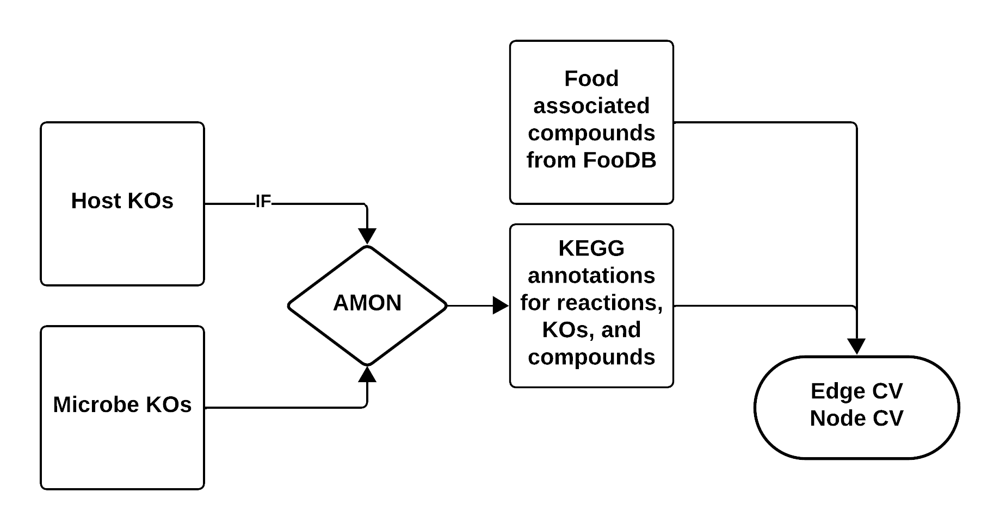

Running the Pipeline
This pipeline converts dietary data (e.g., FFQs) and microbial gene information into a graph structure for analyzing metabolic interactions between food and gut microbes.
Overview
graph LR
A[FFQ / Food List] --> B[Compound Source]
B --> C[FooDB Workflow: DM and DMH]
C --> D[Graph Data]
D --> E[Pattern Extraction]
E --> F1[Visualization]
E --> F2[Metabolome]| Step | Description | Required |
|---|---|---|
| 1 | Launch Streamlit app to create machine-readable FFQ | Optional |
| 2 | Choose compound source (FooDB or KEGG) | ✅ |
| 2A | If FooDB, determine if host is included | Optional |
| 3A/3B | Generate nodes and edges | ✅ |
| 4 | Microbial compound report | Optional |
| 5 | Build graph and extract patterns | ✅ |
| 6 | Visualize results | Optional |
| 7 | Metabolome comparison | Optional |
Step 1 — Create a Machine-Readable FFQ
Food Frequency Questionnaires (FFQs) capture how often participants consume specific foods, but they aren't directly usable in computational workflows due to format heterogeneity, lack of molecular resolution, and inconsistent structure.
A Streamlit app is provided to generate standardized, machine-readable FFQ datasets that map food items to compounds via FooDB.
streamlit run src/get_foods.py
In the app: 1. Search for and select foods 2. Assign a consumption frequency (1–100%) 3. Download the generated dataset 4. Shut down the application
No FFQ? No problem.
You can run the pipeline using all foods available in FooDB. Skip food metadata
creation in Step 3, or pass the foodb and all-foods flags in the workflow runner.
Food compound reports are skipped due to dataset size.
Step 2 — Choose a Compound Source
FooDB contains compounds identified in foods via LC-MS experiments, many of which link to KEGG. Core metabolic compounds (amino acids, sugars, fatty acids, nucleotides) are well-represented, but specialized plant compounds (flavonoids, alkaloids, terpenes) may be missing.
Limitations: Incomplete compound coverage · Limited food representation · U.S.-centric food data

Note
AMON takes a list of KOs and finds producible compounds via KEGG reactions, assigning their origin (host vs. microbial).
Step 3 — FooDB Workflow
1. Generate Food–Compound Metadata
Skip this step if using all FooDB foods —
Data/AllFood/food_meta.csvis pre-built.
Rscript src/dietmicrobe/comp_FoodDB.R \
--diet_file "Data/test_sample/foodb_foods_dataframe.csv" \
--content_file "Data/Content.csv" \
--ExDes_file "Data/CompoundExternalDescriptor.csv" \
--meta_o_file "food_meta.csv"
Output: Food items mapped to KEGG compound IDs with aggregated consumption frequencies.
2. Generate Food Compound Report (optional)
Skip if using all foods — the dataset is too large.
python src/dietmicrobe/RenderCompoundAnalysis.py \
--food_file "food_meta.csv" \
--output "food_compound_report.html"
3. Run AMON
amon.py \
-i "Data/test_sample/noquote_ko.txt" \
-o "AMON_output/" \
--save_entries
4. Create Graph Data
python src/dietmicrobe/main_metab.py \
--f "food_meta.csv" \
--r "AMON_output/rn_dict.json" \
--m_meta "Data/test_sample/ko_taxonomy_abundance.csv" \
--e-weights \
--n-weights \
--org \
--a "Abundance_RPKs" \
--o "graph/"
Step 4 — Microbial Compound Report (optional)
Requires microbial taxonomy and abundance data.
python src/RenderCompoundAnalysis_Microbe.py \
--node_file "graph/nodes.csv" \
--edge_file "graph/edges.csv" \
--output "microbe_compound_report.html"
Step 5 — Build Graph and Extract Patterns
For Diet -> Microbe patterns run:
python src/dietmicrobe/run_graph.py \
--n "graph/nodes.csv" \
--e "graph/edges.csv" \
--o "graph_results.csv"
Patterns identified:
| Pattern | Description |
|---|---|
| Food → Microbe | Compound produced by diet, consumed by microbe |
| Food → Both | Compound shared between diet and microbial production |
| Both → Both | Compound produced and consumed across both sources |
For Diet -> Microbe -> Host patterns run:
python src/dietmicrobehost/host_run_graph.py \
--n "graph/nodes.csv" \
--e "graph/edges.csv" \
--o "graph_results.csv"
Patterns identified
| # | Pattern | Description |
|---|---|---|
| 1 | diet → microbe → host | Diet-only → microbial-only → host-only transformation |
| 2 | diet → microbe → hostdiet | Diet-only → microbial-only → host or diet origin |
| 3 | diet → microbe → hostmicrobe | Diet-only → microbial-only → host or microbial origin |
| 4 | diet → microbe → all | Diet-only → microbial-only → any source |
| 5 | diet → microbediet → host | Diet-only → diet or microbial → host-only |
| 6 | diet → microbediet → hostdiet | Diet-only → diet or microbial → host or diet origin |
| 7 | diet → microbediet → hostmicrobe | Diet-only → diet or microbial → host or microbial origin |
| 8 | diet → microbediet → all | Diet-only → diet or microbial → any source |
| 9 | diet → all → host | Diet-only → any source → host-only |
| 10 | diet → all → hostdiet | Diet-only → any source → host or diet origin |
| 11 | diet → all → hostmicrobe | Diet-only → any source → host or microbial origin |
| 12 | diet → all → all | Diet-only → any source → any source |
| 13 | microbediet → microbe → host | Diet or microbial → microbial-only → host-only |
| 14 | microbediet → microbe → hostdiet | Diet or microbial → microbial-only → host or diet origin |
| 15 | microbediet → microbe → hostmicrobe | Diet or microbial → microbial-only → host or microbial origin |
| 16 | microbediet → microbe → all | Diet or microbial → microbial-only → any source |
| 17 | microbediet → microbediet → host | Diet or microbial → diet or microbial → host-only |
| 18 | microbediet → microbediet → hostdiet | Diet or microbial → diet or microbial → host or diet origin |
| 19 | microbediet → microbediet → hostmicrobe | Diet or microbial → diet or microbial → host or microbial origin |
| 20 | microbediet → microbediet → all | Diet or microbial → diet or microbial → any source |
| 21 | microbediet → all → host | Diet or microbial → any source → host-only |
| 22 | microbediet → all → hostdiet | Diet or microbial → any source → host or diet origin |
| 23 | microbediet → all → hostmicrobe | Diet or microbial → any source → host or microbial origin |
| 24 | microbediet → all → all | Diet or microbial → any source → any source |
| 25 | all → microbe → host | Any source → microbial-only → host-only |
| 26 | all → microbe → hostdiet | Any source → microbial-only → host or diet origin |
| 27 | all → microbe → hostmicrobe | Any source → microbial-only → host or microbial origin |
| 28 | all → microbe → all | Any source → microbial-only → any source |
| 29 | all → microbediet → host | Any source → diet or microbial → host-only |
| 30 | all → microbediet → hostdiet | Any source → diet or microbial → host or diet origin |
| 31 | all → microbediet → hostmicrobe | Any source → diet or microbial → host or microbial origin |
| 32 | all → microbediet → all | Any source → diet or microbial → any source |
| 33 | all → all → host | Any source → any source → host-only |
| 34 | all → all → hostdiet | Any source → any source → host or diet origin |
| 35 | all → all → hostmicrobe | Any source → any source → host or microbial origin |
| 36 | all → all → all | Any source → any source → any source |
Step 6 — Visualize Graph Results
python src/dietmicrobe/RenderGraphResults_Report.py \
--patterns "graph_results.csv" \
--rxn_json "AMON_output/rn_dict.json" \
--output "graph_results_report.html"
python src/dietmicrobehost/RenderGraphResults_Report.py \
--patterns "graph_results.csv" \
--rxn_json "AMON_output/rn_dict.json" \
--output "graph_results_report.html"
Step 7 — Metabolome Comparison
To view which compounds identified in the patterns were also found in a metabolomics experiment you performed, two inputs are needed:
Inputs
-
A
graph_results.csvor the output of Step 4. -
CSV containing a list of KEGG compounds that were identified in the metabolome. An example of this file can be found in
Data/test_sample/metabolome.csv.
Running the script
To get a list of optional and required arguments run python src/RenderMetabolomeComparison.py -h:
options:
-h, --help show this help message and exit
--patterns PATTERNS Path to the graph_results.csv
--metabolome METABOLOME
Path to CSV file containing one column of KEGG compounds.
--output OUTPUT Path to HTML report file
Tip
Use run_workflow.py to run steps 2-7 with Snakemake workflow described on the home page automatically. See the Quick Start guide for a complete example.